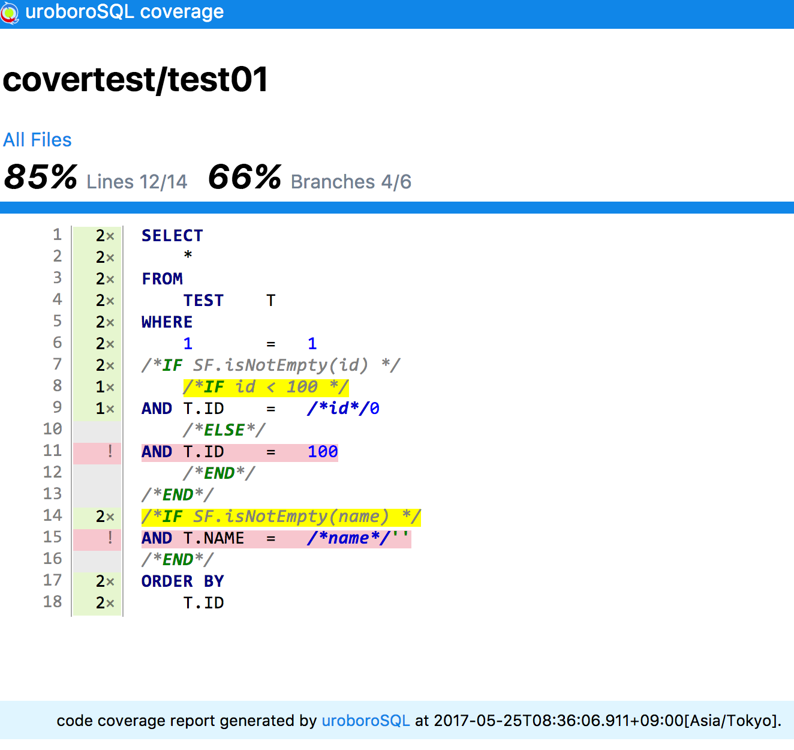

高度な操作
SqlConfigのカスタマイズ
uroboroSQLではSqlConfigを生成するタイミングで各種の設定を行うことによりSQL発行時の動作を変更することができます。
設定はUroboroSQLビルダーAPIで行います。
区分値定数や列挙型の利用
これまでSQLの開発では、区分値や定数値などの固定値がマジックナンバーとしてSQL文内に埋め込まれていました。
しかしマジックナンバーの記述は可読性が悪く仕様変更時の影響調査が困難なため不具合の温床となっていました。
例
1 | SELECT |
uroboroSQLはエンタープライズ分野での開発に利用されてきた経験から、SQL文の中でマジックナンバーの代わりに定数や列挙型を利用するための仕組みを提供しています。
区分値定数/列挙型を利用するためにはSqlConfigに以下の設定を追加します。1
2
3
4
5
6
7
8
9
10
11
12// create SqlConfig
SqlConfig config = UroboroSQL
.builder(...)
// SqlContextFactoryの設定
.setSqlContextFactory(new SqlContextFactoryImpl()
// 定数クラス設定の追加
.setConstantClassNames(Arrays.asList(TypeConstants.class.getName()))
// 列挙型パッケージ設定の追加
.setEnumConstantPackageNames(Arrays.asList(Gender.class.getPackage().getName()))
// 定数パラメータのプレフィックス指定(初期値 : CLS_)
.setConstParamPrefix("CLS_"))
.build();
定数クラス : TypeConstants.javaの実装例1
2
3
4
5
6
7
8
9
10
11
12
13
14
15
16
17
18
19
20
21
22
23
24
25
26
27
28
29
30
31
32
33
34
35
36
37
38
39
40
41
42
43
44
45
46
47
48
49/**
* 区分値定数クラス
*/
public final class TypeConstants {
private TypeConstants() {}
/** 区分種別名称：口座種別区分 区分種別番号：0035 長さ：0 */
public static final String ACCOUNT_TYP = "0035";
/** 区分種別名称：口座種別区分 区分値名称：普通 区分値略称：普通 区分値番号：1 */
public static final String ACCOUNT_TYP_FUTSU = "1";
/** 区分種別名称：口座種別区分 区分値名称：当座 区分値略称：当座 区分値番号：2 */
public static final String ACCOUNT_TYP_TOUZA = "2";
/** 区分種別名称：口座種別区分 区分値名称：定期 区分値略称：定期 区分値番号：3 */
public static final String ACCOUNT_TYP_TEIKI = "3";
/** 区分種別名称：発行区分 区分種別番号：0052 長さ：0 */
public static final String ISSUE_TYP = "0052";
/** 区分種別名称：発行区分 区分値名称：未発行 区分値略称：未発行 区分値番号：1 */
public static final String ISSUE_TYP_UNISSUED = "1";
/** 区分種別名称：発行区分 区分値名称：発行済 区分値略称：発行済 区分値番号：2 */
public static final String ISSUE_TYP_OUTSTANDING = "2";
}
/**
* システム定数
*/
public final class Consts {
private Consts() {}
public static final class CommonValue {
private CommonValue() {}
/** 業務日付（オンライン） */
public static final String ONLINE_YMD = "1";
/** 業務日付（バッチ） */
public static final String BATCH_YMD = "2";
/** SQL上でのフラグ表現（TRUE=1） */
public static final String FLAG_ON = "1";
/** SQL上でのフラグ表現（FALSE=0） */
public static final String FLAG_OFF = "0";
/** 日付ALL0 */
public static final String ZERO_DATE = "00000000";
/** 日付最小値 */
public static final String MIN_DATE = "19000101";
/** 日付最大値 */
public static final String MAX_DATE = "99991231";
}
}
列挙型 : Gender.javaの実装例1
2
3
4
5
6
7
8
9
10
11
12
13
14
15
16
17/**
* 性別を表す列挙型
*/
public enum Gender {
MALE("M"), FEMALE("F"), OTHER("O");
private final String label;
private Gender(String label) {
this.label = label;
}
public String toString() {
return label;
}
}
このように区分値定数や列挙型を定数パラメータとして登録しておくことで、SQL文の中で定数名が利用できるようになります。
定数パラメータを利用する場合、以下の命名ルールに従ってパラメータを指定します。
| パターン | 書式 |
|---|---|
| 定数 | [定数パラメータプレフィックス][定数フィールド名大文字] |
| 定数(Innerクラスがある場合) | [定数パラメータプレフィックス][Innerクラス名大文字スネークケース]_[Innerクラス内定数フィールド名大文字] |
| 列挙型 | [定数パラメータプレフィックス][列挙型名大文字]_[列挙子名大文字] |
※定数パラメータプレフィックスの初期値は
CLS_となっています。SqlConfig生成時の設定で変更することが可能です。
実際に使用する際は置換文字列として
- /*#[定数パラメータプレフィックス][定数フィールド名大文字]*/
- /*#[定数パラメータプレフィックス][Innerクラス名大文字スネークケース]_[Innerクラス内定数フィールド名大文字]*/
- /*#[定数パラメータプレフィックス][列挙型名大文字]_[列挙子名大文字]*/
または
- /*$[定数パラメータプレフィックス][定数フィールド名大文字]*/
- /*$[定数パラメータプレフィックス][Innerクラス名大文字スネークケース]_[Innerクラス内定数フィールド名大文字]*/
- /*$[定数パラメータプレフィックス][列挙型名大文字]_[列挙子名大文字]*/
という風に使用します。
定数や列挙型の値は固定なので生成されるSQLは毎回同じ値になり、SQL文解析処理によるCPU負荷を考慮する必要はありません。
定数の例1
2
3
4
5
6
7
8
9
10SELECT
EMP.EMP_NO AS EMP_NO
, EMP.FIRST_NAME AS FIRST_NAME
, EMP.LAST_NAME AS LAST_NAME
, EMP.BIRTH_DATE AS BIRTH_DATE
, EMP.GENDER AS GENDER
FROM
EMPLOYEE EMP
WHERE
EMP.BIRTH_DATE != /*#CLS_COMMON_VALUE_ZERO_DATE*/'00000000' -- 定数パラメータの指定
列挙型の例1
2
3
4
5
6
7
8
9
10SELECT
EMP.EMP_NO AS EMP_NO
, EMP.FIRST_NAME AS FIRST_NAME
, EMP.LAST_NAME AS LAST_NAME
, EMP.BIRTH_DATE AS BIRTH_DATE
, EMP.GENDER AS GENDER
FROM
EMPLOYEE EMP
WHERE
EMP.GENDER = /*#CLS_GENDER_FEMALE*/'F' -- 列挙型定数パラメータの指定
SQLフィルター
uroboroSQLではSQLの実行を行う一連の処理の流れの中にいくつかの拡張ポイントを設けており、この拡張ポイントに処理を追加することで、共通的なSQL文の加工や検索結果の記録といった様々な拡張を行うことができるように設計されています。
SQL処理の拡張はSqlFilterインタフェースを実装したクラスを作成し登録することで行います。
SqlFilterインタフェースには以下のメソッドが定義されています。
| SqlFilterメソッド名 | 説明 |
|---|---|
| initialize | SqlFilterの初期化を行う |
| doTransformSql | 変換前のSQLに対して加工を行う |
| doParameter | バインドパラメータの加工を行う |
| doOutParameter | ストアドプロシージャのOutParameterの加工を行う |
| doPreparedStatement | PreparedStatementの加工を行う |
| doCallableStatement | CallableStatementの加工を行う |
| doQuery | 検索処理結果の加工を行う |
| doUpdate | 更新処理結果の加工を行う |
| doBatch | バッチ処理結果の加工を行う |
| doProcedure | Procedure呼出処理結果の加工を行う |
uroboroSQLには標準でいくつかのSqlFilterの実装が含まれています。
| クラス名 | 説明 |
|---|---|
| jp.co.future.uroborosql.filter.DebugSqlFilter | SqlFilterの動作を理解するためのサンプル。 各拡張ポイントで呼び出されるメソッドでログを出力します。 |
| jp.co.future.uroborosql.filter.DumpResultSqlFilter | 検索結果を表形式でログ出力するSQLフィルター。 SqlREPLで使用しています。 |
| jp.co.future.uroborosql.filter.WrapContextSqlFilter | SQL文の前後に文字列を追加するSQLフィルター。 ページングや検索件数の上限設定に使用します。 |
| jp.co.future.uroborosql.filter.SecretColumnSqlFilter | 指定した特定のカラムのみ暗号化を行うSQLフィルター。 パスワードや機密情報を暗号化してDBに格納するために使用します。 |
| jp.co.future.uroborosql.filter.AuditLogSqlFilter | 監査記録を取得するためのSQLフィルター。 |
SQLフィルターを利用するためには、SqlConfig生成時にSqlFilterManagerの設定を追加して利用するSQLフィルターの登録を行ってください。
SQLフィルターは複数登録することができます。複数登録した場合は登録した順にSQLフィルターが処理されます。
1 | // create SqlConfig |
独自にSqlFilterを作成する場合は、jp.co.future.uroborosql.filter.AbstractSqlFilterを継承し、必要に応じてメソッドをオーバーライドしてください。
1 | public class CustomSqlFilter extends AbstractSqlFilter { |
SQLファイルルートフォルダの設定
uroboroSQLは初期設定ではクラスパス上にあるsqlフォルダ配下のSQLを読み込みます。
このSQLファイルルートフォルダは変更することができます。
SQLファイルルートフォルダの設定 (custom_sqlフォルダを指定)1
2
3
4SqlConfig config = UroboroSQL.builder(...)
// SQLファイルのルートフォルダの設定(custom_sqlフォルダをルートフォルダにする場合)
.setSqlManager(new SqlManagerImpl("custom_sql"))
.build();
エラーハンドリング
uroboroSQLからSQLを発行した際にSQLExceptionがスローされると、そのSQLExceptionを内部に保持するUroborosqlSQLExceptionが呼び出し元に返却されます。UroborosqlSQLExceptionはjava.lang.RuntimeExceptionを継承しているため明示的なキャッチは不要です。
呼出元のアプリケーションで明示的にエラーハンドリングを行う場合は、try-catchでUroborosqlSQLExceptionをキャッチすることで、例外発生時の挙動を制御することができます。
エラーハンドリングの例1
2
3
4
5
6
7
8
9
10
11
12SqlConfig config = UroboroSQL.builder(...).build();
try (SqlAgent agent = config.agent()) {
// INSERT文の実行
// insert into product (product_id) values (/*product_id*/0);
agent.update("example/insert_product")
.param("product_id", 1)
.count();
} catch (UroborosqlSQLException ex) {
// SQLExceptionが発生した際に行う処理を実装
throw new Exception("exception occured. ex=" + ex.getCause().getMessage(), ex);
}
SQL発行のリトライ
SQLを発行した際、タイミングによって発生する例外（テーブルロックエラーなど）の場合はリトライを行い、できるだけ正常に処理を終了させたい場合があります。
通常、このようなケースでは以下のような実装を行います。1
2
3
4
5
6
7
8
9
10
11
12
13
14
15
16
17
18
19
20
21
22
23
24
25
26
27
28
29
30
31
32SqlConfig config = UroboroSQL.builder(...).build();
int retryCount = 0;
for(;;) {
try (SqlAgent agent = config.agent()) {
// INSERT文の実行
// insert into product (product_id) values (/*product_id*/0);
agent.update("example/insert_product").param("product_id", 1).count();
break;
} catch (UroborosqlSQLException ex) {
// SQLExceptionが発生した際に行う処理を実装
int errorCode = ex.getErrorCode();
if (errorCode == 30006 || errorCode == 54) {// リソース・ビジー(Oracleの場合)
// リトライ対象エラーコードの場合はリトライカウントをカウントアップしてリトライする
retryCount++;
if (retryCount == MAX_RETRY_COUNT) { // MAX_RETRY_COUNT はアプリケーションで定義された最大リトライ回数の定数とする
// 最大リトライ回数に達した場合は例外をスローする
throw ex;
} else {
try {
// 10ms 待機
Thread.sleep(10);
} catch (InterruptedException iex) {
// do nothing
}
}
} else {
// リトライ対象エラーコード以外はすぐに例外をスローする
throw ex;
}
}
}
しかし、上記のようなリトライ処理を個々の実装で行うと、実装漏れや実装ミス、実装方法の差異（for()の代わりにwhile()を使用するなど）により、不具合が発生しやすくなります。
uroboroSQLでは、アプリケーション全体のリトライ設定と、リトライ全体設定より優先される個別処理でのリトライ用APIの2種類のAPIを提供することで、より簡潔で確実なリトライ処理が行えるよう工夫されています。
アプリケーション全体のリトライ設定はSqlConfig生成時に行います。1
2
3
4
5
6
7
8
9
10
11SqlConfig config = UroboroSQL.builder(...)
// SqlAgentFactoryの設定
.setSqlAgentFactory(new SqlAgentFactoryImpl()
// アプリケーション全体のリトライ設定
// SQLエラーコードが54,30006のいずれか(Oracleのリソース・ビジー)の場合
.setSqlRetryCodeList(Arrays.asList("54", "30006"))
// 最大リトライ回数（3回）リトライ
.setDefaultMaxRetryCount(3)
// リトライ間隔10ms待機
.setDefaultSqlRetryWaitTime(10))
.build();
リトライAPIを用いた実装は次のようになります。1
2
3
4
5
6
7
8
9
10
11
12
13
14
15
16
17
18
19// アプリケーション全体のリトライ設定に従ってリトライを行う。（個別のリトライ指定なし）
try (SqlAgent agent = config.agent()) {
// INSERT文の実行
// insert into product (product_id) values (/*product_id*/0);
agent.update("example/insert_product")
.param("product_id", 1)
.count();
}
// 個別にリトライ設定を上書きする（retry()を利用）
try (SqlAgent agent = config.agent()) {
// INSERT文の実行
// insert into product (product_id) values (/*product_id*/0);
// リトライ対象エラーコードの場合、5回のリトライを20ms間隔で行う
agent.update("example/insert_product")
.param("product_id", 1)
.retry(5, 20)
.count();
}
SqlAgentの挙動設定
リトライ設定のほかにも、SqlAgentの挙動を変更する設定をSqlConfig生成時に行うことができます。
| 設定項目 | 説明 | 初期値 |
|---|---|---|
| fetchSize | JDBCドライバとDB間のフェッチサイズ(下記補足) | -1(0以上の値で有効化) |
| queryTimeout | 検索タイムアウト時間(秒) | -1(0以上の値で有効化) |
| defaultMapKeyCaseFormat | 検索結果のMapキーのデフォルトCaseFormat | CaseFormat.UPPER_SNAKE_CASE |
| sqlIdKeyName | SQL_IDを置換するためのKEY文字列 | _SQL_ID_ |
| outputExceptionLog | 例外発生時のログ出力を行うかどうかの設定 | false |
- 補足
- fetchSizeは、Statement.setFetchSizeに渡される値です。
- collect/foreachメソッドで返却される結果セットの行数を制限する設定ではありません。
設定例1
2
3
4
5
6
7
8
9
10
11
12
13
14SqlConfig config = UroboroSQL.builder(...)
// SqlAgentFactoryの設定
.setSqlAgentFactory(new SqlAgentFactoryImpl()
// ドライバ↔DB間のフェッチサイズ設定。初期値 : -1(0以上の値で有効化)
.setFetchSize(1000)
// 検索タイムアウト時間(秒)。初期値 : -1(0以上の値で有効化)
.setQueryTimeout(30)
// 検索結果のMapキーのデフォルトCaseFormat。初期値 : UPPER_SNAKE_CASE
.setDefaultMapKeyCaseFormat(CaseFormat.CAMEL_CASE)
// SQL_IDを置換するためのKEY文字列を設定。初期値 : _SQL_ID_
.setSqlIdKeyName("_SQL_ID_")
// 例外発生時のログ出力を行うかどうかを設定。初期値 : false
.setOutputExceptionLog(true)
.build();
自動パラメータバインド関数の設定
(new v0.6.1)
システム内の各テーブルに共通項目（登録日時、更新日時など）が定義されている場合、INSERT文やUPDATE文を発行する際には、必ずこれらの共通項目に対するパラメータを指定する必要が出てきます。
このような共通項目へのパラメータ設定を個別の実装で行うと実装が煩雑になりますし、どうしても実装漏れや記述ミスにより正しく値が設定されない、といったことが起こります。
uroboroSQLではこのような共通項目に対して自動でパラメータをバインドする仕組みを提供しています。
設定はSqlConfig生成時に行います。
設定例1
2
3
4
5
6
7
8
9
10
11SqlConfig config = UroboroSQL
.builder(...)
// SqlContextFactoryの設定
.setSqlContextFactory(new SqlContextFactoryImpl()
// query用自動パラメータバインド関数の登録
.addQueryAutoParameterBinder((ctx) -> ctx.paramIfAbsent("current_flg", true))
// update/batch/procedure用自動パラメータバインド関数の登録
.addUpdateAutoParameterBinder((ctx) -> ctx.paramIfAbsent("ins_datetime", LocalDateTime.now()))
.addUpdateAutoParameterBinder((ctx) -> ctx.paramIfAbsent("upd_datetime", LocalDateTime.now()))
)
.build();
自動パラメータバインド関数はSqlContextを引数に受け取るので、関数内でパラメータの設定を行ってください。
関数の評価は実行SQL生成処理（SQL文内の/*IF*/や/*BEGIN*/、/*parameter_name*/の評価）の直前に行われます。
SQLカバレッジ
これまでアプリケーション上の条件分岐はカバレッジツールを利用して網羅率を確認することができました。
しかし、SQL文の条件分岐は実際にその分岐が通っているかどうかを確認する手段がなく、リリース後に初めて通った条件で不具合を発生させることがありました。
この問題を解決するためにuroboroSQLでは、SQL文の条件分岐を集計してカバレッジレポートを行う機能を提供します。
SQLカバレッジはuroboroSQLを利用するアプリケーションの起動時オプションに-Duroborosql.sql.coverage=trueを追加することで有効になります。
SQLカバレッジを有効にするとアプリケーションが実行している間に発行されるSQLについて、カバレッジ情報が収集されます。
カバレッジ情報の収集結果は標準ではtarget/coverage/sql-cover.xmlに出力されます。
このファイルの場所や名前を変更したい場合は、起動時オプションに-Duroborosql.sql.coverage.file=[出力ファイルパス]を指定してください。
出力されたsql-cover.xmlをJenkinsのCobertura pluginなどのXMLレポートとして読み込むとSQLファイルのカバレッジレポートが参照できるようになります。

またv0.2.0より、uroboroSQLのみでHTMLレポートを出力することができるようになりました。
起動時オプションに-Duroborosql.sql.coverage=jp.co.future.uroborosql.coverage.reports.html.HtmlReportCoverageHandlerを指定することで本機能を利用することができます。
カバレッジ情報はデフォルトではtarget/coverage/sqlフォルダ配下に出力されます。
出力先フォルダを変更した場合は、起動時オプションに-Duroborosql.sql.coverage.dir=[出力フォルダパス]を指定してください。
出力されたレポートのサンプルは下記を参照してください。
- サマリーページ

- 詳細ページ

ログ
uroboroSQLではログ出力ライブラリとしてSLF4Jを使用しています。SLF4Jの詳細は公式のドキュメントを参照して下さい。
uroboroSQLで出力されるログ内容は以下表の通りです。
| クラス名 | TRACE | DEBUG | INFO | WARN | ERROR | FATAL |
|---|---|---|---|---|---|---|
| AbstractAgent | 変換前SQL | 実行時SQL | - | - | - | - |
| DebugSqlFilter | - | パラメーター/ 対象データ数/ 実行結果 |
- | - | - | - |
| IfNode | - | 評価式/ 判定結果/ パラメーター |
- | - | - | - |
| Parameter | - | パラメーターの設定 | - | サブパラメーター値にNULLを設定 | - | - |
| SecretColumnSqlFilter | - | バッチ処理追加件数/ ストアドプロシージャ出力パラメーター |
- | - | - | - |
| SqlAgent | ステートメントのクローズ | 処理実行アナウンス/ リトライ実行アナウンス/ SQL実行時間 |
- | - | エラーメッセージ | - |
| SqlContext | - | バッチ処理追加件数/ ストアドプロシージャ出力パラメーター |
- | - | - | - |
| SqlContextFactory | - | 定数パラメーター | - | 定数名の重複 | エラーメッセージ | - |
| SqlLoader | SQL定義ファイルの読み込み完了 | SQL定義ファイルの読み込み開始/読み込み中 | - | - | デフォルトファイルパスの設定/ デフォルト拡張子/ 空のSQLキャッシュの返却 |
- |
システムプロパティ
uroboroSQLではシステムプロパティを指定することで動作を変更することができます。
| プロパティ名 | 説明 | 初期値 |
|---|---|---|
| uroborosql.sql.coverage | SQLカバレッジを出力するかどうかのフラグ。trueの場合はSQLカバレッジを出力します。文字列として jp.co.future.uroborosql.coverage.CoverageHandlerインタフェースの実装クラスが設定された場合はそのクラスを利用してカバレッジの収集を行います。 |
なし |
| uroborosql.sql.coverage.file | 指定されたPATH(ファイル)に SQLカバレッジのCobertura形式のxmlレポートを出力します。 | ./target/coverage/sql-cover.xml |
| uroborosql.sql.coverage.dir | 指定されたPATH(フォルダ)にSQLカバレッジのHTMLレポートを出力します。 | ./target/coverage/sql |
| uroborosql.entity.cache.size | Entityクラス情報のキャッシュサイズを指定します。 キャッシュサイズを超えるEntityクラスの読み込みがあった場合は古い情報から破棄されます。 |
30 |